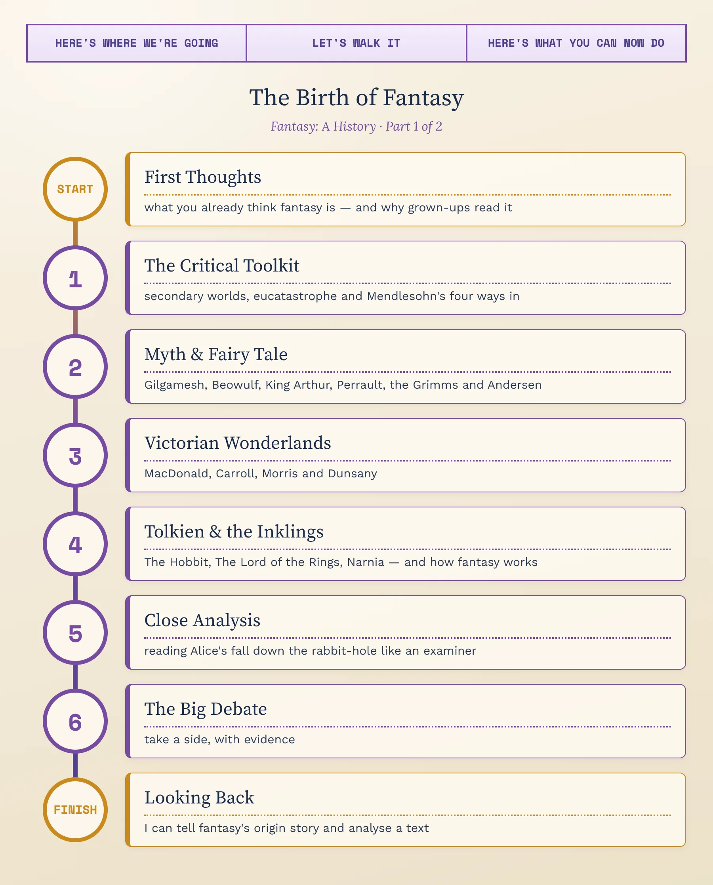
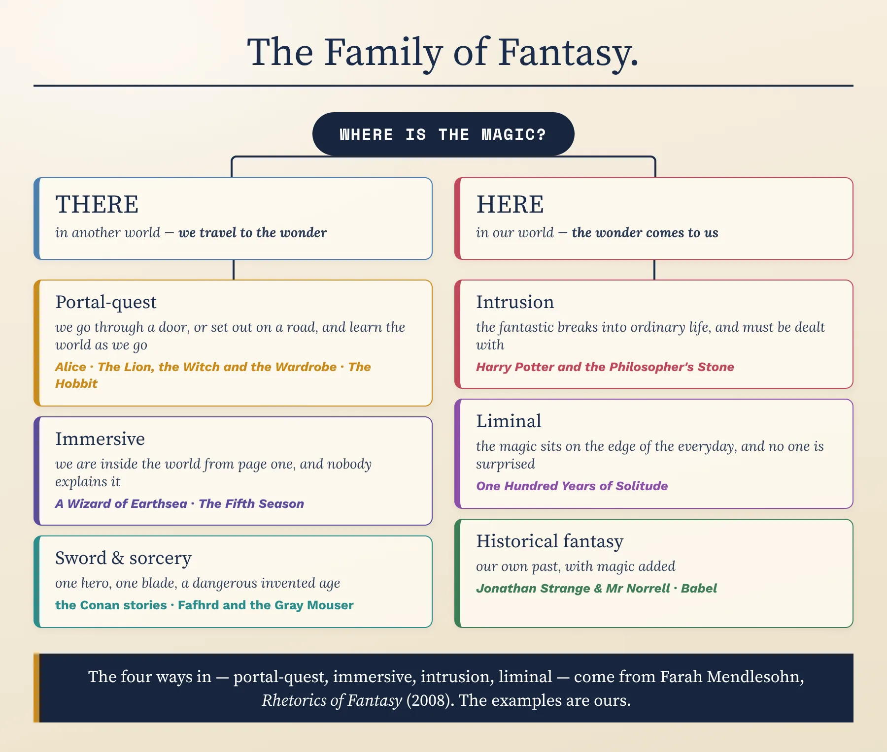
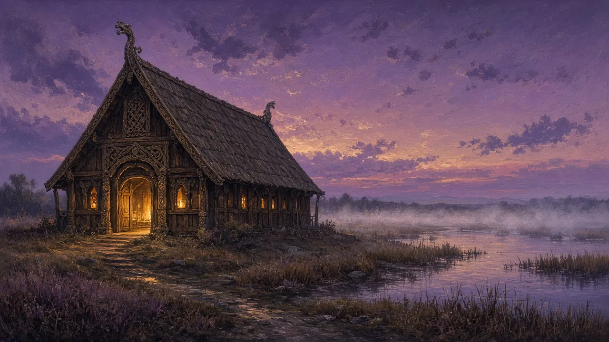
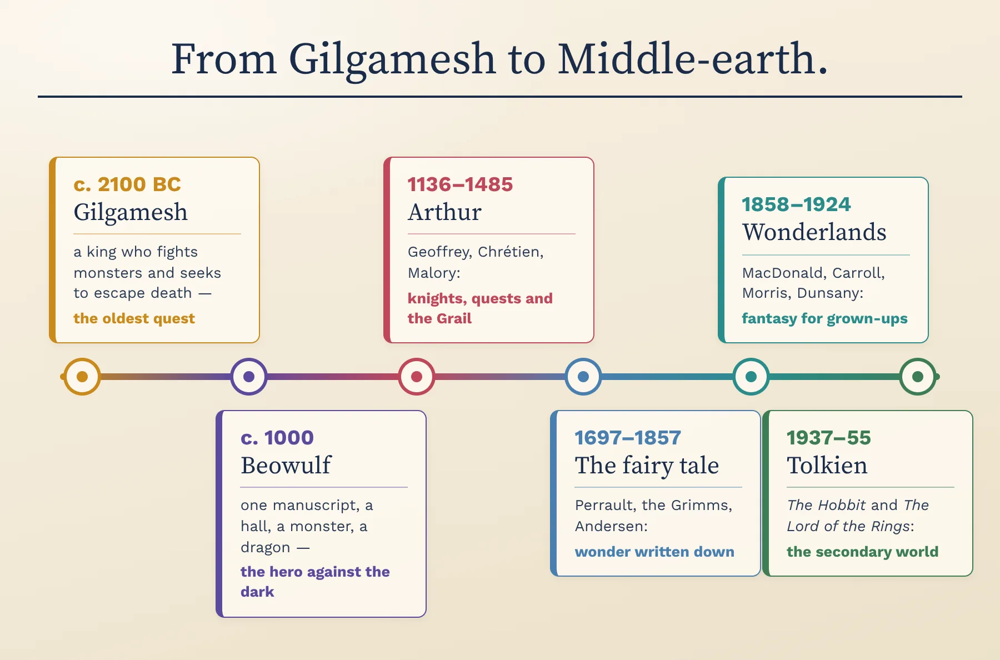
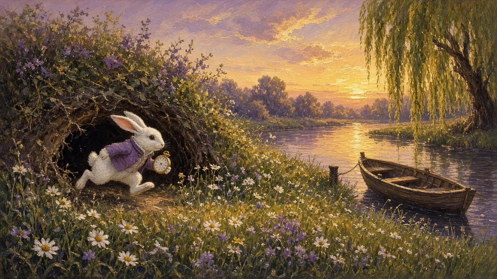
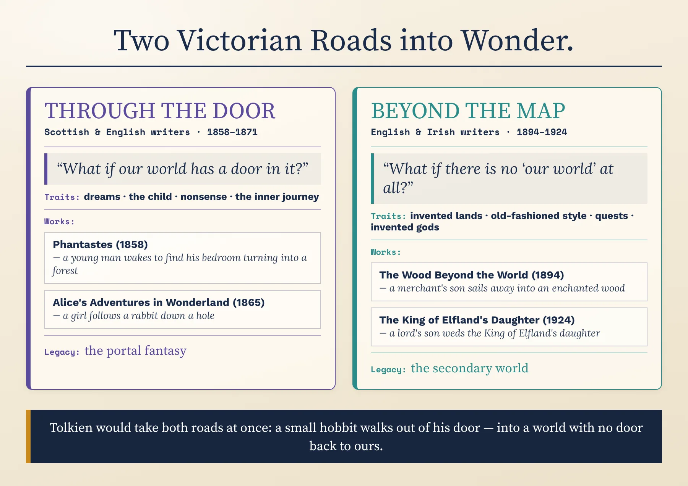
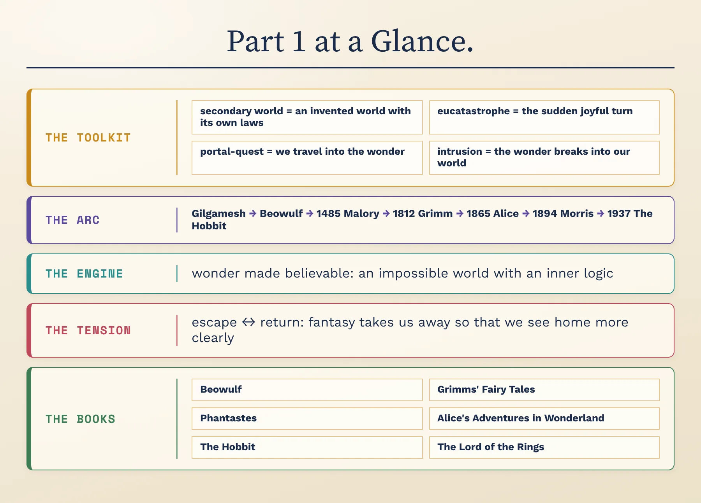

Myth, Fairy Tale & the Making of Middle-earth · C1/C2 · Speaking, Analysis & Discussion

Fantasy is the oldest kind of story we have and one of the youngest genres on the bookshop shelf. Long before anyone wrote a novel, people told stories about gods, giants, talking animals and heroes who fought monsters — yet the idea of “fantasy” as a section of the bookshop is barely sixty years old. It is often dismissed as escapism for children, or as wizards and dragons for people who never grew up. Yet some of the most loved books of the last two centuries are fantasies: Alice's Adventures in Wonderland, The Hobbit, The Lord of the Rings. Underneath the magic, fantasy asks serious questions — what is real, what is worth fighting for, and why we need stories at all. Over these two lessons we'll trace how it grew from ancient epics and fireside tales into a worldwide literature — and examine how it works on a reader.
Before we begin — think aloud, no notes. There are no wrong answers yet:
When you hear “fantasy novel,” what three images come into your head first? Where do you think those images came from — books, films, games, or childhood?
Think of a story — a book, a film, a series, a fairy tale from your childhood — that took you completely into another world. What made you believe in it, even though you knew it was impossible?
Gut instinct, before we study anything: is fantasy an escape from real life, or a way of seeing real life more clearly? By the end of today you'll answer this again with evidence.
To discuss fantasy at an advanced level you need metalanguage — precise critical terms for what a text is doing. First, the biggest map of all: the family of fantasy, and the one question that splits it in two.
The critic Farah Mendlesohn, in her book Rhetorics of Fantasy (2008), argued that the most useful question to ask about a fantasy is not “does it have dragons?” but how does the reader enter the fantastic? She described four ways in. Two take us there, into another world; two bring the magic here, into ours:
Apply the test. A story about a boy who receives a letter inviting him to a hidden school of magic — portal, or intrusion? And a novel set entirely in an imaginary kingdom, with no one from our world in it at all — is it still “escape” if there is nowhere to escape from? Defend a placement for each.

The map splits fantasy into stories where we travel there and stories where the wonder comes here, with their branches underneath. Put three fantasy stories you know onto it. Then take one hard case — a story that begins in our world and ends in another — and argue where it truly belongs, using Mendlesohn's test: how does the reader first meet the magic?
Four terms run through everything that follows. Two come from J. R. R. Tolkien's essay “On Fairy-Stories”, first given as a lecture at the University of St Andrews on 8 March 1939 and published, much expanded, in 1947; two come from Mendlesohn.
In “On Fairy-Stories”, Tolkien described the storyteller as a sub-creator, who makes a Secondary World that the reader's mind can enter. Inside it, what the writer tells us is “true” because it agrees with that world's own laws.
He disagreed with a famous phrase from the poet Samuel Taylor Coleridge, who wrote in 1817 of “that willing suspension of disbelief for the moment, which constitutes poetic faith.” A good fantasy, Tolkien argued, does not ask us to switch off our disbelief: it produces Secondary Belief. The moment the spell breaks — one false note, one rule broken without reason — we are thrown back out into the Primary World, and disbelief returns.
Tolkien invented the word from Greek: eu, “good”, and catastrophe, the turn at the end of a drama. Tragedy, he said, has its catastrophe; the fairy story has its opposite — a sudden and unexpected rescue at the darkest moment, which brings a joy that can make the reader's eyes fill with tears.
He did not mean a cheap happy ending. Sorrow and failure must be real for the turn to work. He also listed what fairy stories give their readers: Fantasy, Recovery (seeing ordinary things freshly again), Escape and Consolation. And he defended escape fiercely: a prisoner who tries to get out and go home, he argued, should not be confused with a soldier who deserts.
The oldest and most familiar shape in fantasy. A character, often young and often ordinary, leaves home — through a rabbit-hole, a wardrobe or simply a front door — and enters a world they do not understand. Because the hero knows nothing, the writer can explain everything without slowing the story: we learn the world exactly as fast as the hero does.
Mendlesohn notes that this form tends to give the hero, and the reader, a guide who knows the truth, and a map to follow. The danger is a world that feels like a museum we are being walked through.
Here the movement runs the other way: the magic comes to us. A ghost, a dragon, a wizard or a letter from a secret world arrives in the ordinary world, and the story is about the shock — disbelief, fear, then the struggle to put things right or to live with the change.
Intrusion is the form fantasy shares with horror, which is why the two genres so often overlap: by Mendlesohn's definition, Dracula would count as an intrusion fantasy. What decides the genre is the feeling: horror wants us to fear the intruder; fantasy usually wants us to wonder at it.
Take any fantasy film, book, game or series you know — even vaguely. Tell me: does it have a secondary world? Is it a portal-quest or an intrusion? Does it end with a eucatastrophe? (If nothing comes to mind, use a fairy tale you know — Cinderella or Snow White — and start there.)
Fantasy has no birthday. For most of history, stories of gods, monsters and magic were simply stories — told, sung and written down without anyone calling them “fantasy”. But the modern genre took almost everything from three old sources: the epic, the medieval romance and the fairy tale.
The oldest: the Epic of Gilgamesh, from ancient Mesopotamia (modern Iraq). The earliest poems about Gilgamesh, a king of the city of Uruk, were written in Sumerian around four thousand years ago; the fullest version survives on clay tablets from the library of the Assyrian king Ashurbanipal at Nineveh.
What happens: Gilgamesh, a proud and restless king, finds an equal in the wild man Enkidu. Together they travel to a distant cedar forest and kill its monstrous guardian, Humbaba. When Enkidu dies, Gilgamesh, terrified of death, sets out on a journey to the edge of the world to find the one man who has been given eternal life — and learns that immortality is not for humans.
Its rediscovery: in 1872 George Smith, working on the tablets at the British Museum, found in them a story of a great flood strikingly like Noah's, and became famous overnight.
Why it matters: nearly everything is already here — the quest, the monster in the forest, the friend, the journey to the edge of the map, and the great question beneath the adventure: how should a mortal live?

The poem: about 3,000 lines of Old English verse, by an unknown poet. Scholars still argue about when it was composed — anywhere from the eighth to the early eleventh century — and it survives in only one manuscript, copied around the year 1000, which was scorched in a fire at Ashburnham House in London in 1731 and is now in the British Library.
What happens: for twelve years the monster Grendel has attacked Heorot, the great hall of the Danish king Hrothgar, carrying off warriors at night. The young hero Beowulf sails from the land of the Geats, fights Grendel with his bare hands and tears off his arm. Grendel's mother comes for revenge; Beowulf follows her to her lair beneath a lake and kills her. Fifty years later, now an old king, he fights a dragon that is burning his land — and both die.
In its own words (in Francis Gummere's 1910 translation): “Grendel this monster grim was called, / march-riever mighty, in moorland living, / in fen and fastness”.
Why it matters: in a famous 1936 lecture, “Beowulf: The Monsters and the Critics”, Tolkien argued that scholars had been wrong to treat the monsters as childish distractions from the history: the monsters, he said, are the heart of the poem. The man who said that would go on to write The Hobbit — whose dragon, like Beowulf's, is woken by the theft of a cup.
The legend grows: around 1136, Geoffrey of Monmouth's History of the Kings of Britain told the story of Arthur, the wizard Merlin and the sword-fighting kings of ancient Britain as if it were history. In France, Chrétien de Troyes added Lancelot and the first story of the Grail. In 1485, William Caxton printed Sir Thomas Malory's Le Morte d'Arthur, which gathered the tales into one great English book.
What the romance gave fantasy: the knight on a quest, the enchanted forest, the magic sword, the wise wizard, the lady of the lake — and a world that is clearly not our ordinary one, where adventures come to those who ride out to find them.
Charles Perrault (1628–1703), a French writer at the court of Louis XIV, published Histoires ou contes du temps passé in 1697: elegant, witty versions of “Cinderella”, “Sleeping Beauty”, “Little Red Riding Hood”, “Puss in Boots” and “Bluebeard”, each ending with a little moral in verse.
Jacob and Wilhelm Grimm were scholars of language who collected German folk tales. The first volume of their Children's and Household Tales appeared on 20 December 1812 with 86 stories; by the final edition of 1857 there were 200, plus ten religious legends. Over the years, Wilhelm rewrote the tales — making them more polished, more Christian and more suitable for children, while often keeping their cruelty.
Why they matter: the fairy tale gave fantasy its talking animals, witches, curses, magical helpers and the rule of three — and a world where the youngest, the poorest and the kindest win.
Who he was: the son of a poor shoemaker in Odense, who went to Copenhagen at fourteen to make his fortune. He published his first small booklet of fairy tales in 1835.
What he wrote: unlike the Grimms, Andersen invented most of his stories. “The Little Mermaid” (1837) gives up her voice for love and does not win the prince; “The Ugly Duckling” (1843) suffers until he discovers he is a swan; in “The Snow Queen” (1844), the girl Gerda travels to the frozen north to rescue her friend Kai, whose heart has been chilled by a splinter of an evil mirror.
Why he matters: he made the fairy tale personal, sad and literary — a form for the writer's own feelings, not only for the folk's.
The Grimms' first edition was full of scholarly notes; later editions were softened for families. Tolkien, in “On Fairy-Stories”, insisted that fairy stories have no special connection with children. Who do you think fairy tales are really for? Argue it aloud, then compare your view with a critic's.

The line runs from Gilgamesh to Tolkien. Cover it, and put these five in order from memory: The Hobbit, the Grimms' first volume, Le Morte d'Arthur, the Beowulf manuscript, Perrault's tales. Then pick any two that sit next to each other and say what the later one took from the earlier.
In the second half of the nineteenth century, a handful of writers began to write fantasy on purpose — not retelling old tales, but inventing new worlds, for children and for adults. Two roads opened: one through a door in our own world, the other into a world with no door back to ours at all.
Victorian Britain was the first industrial nation: a country of factories, railways, smoke and science. Many writers and artists answered it with a longing for the opposite — for the medieval, the rural and the magical. Fairy paintings were fashionable; the Grimms and Andersen were translated into English and read in every nursery; and from 1889 Andrew Lang's coloured Fairy Books, beginning with The Blue Fairy Book, gathered tales from all over the world.
At the same time, childhood itself was being reimagined as a time of innocence and play — and a new market of middle-class children needed books that delighted instead of only teaching.

Many critics read Victorian fantasy as an escape from the factory age. Is that convincing — or is it too simple? Make the case for it, then say one thing it misses about Alice, a book full of logic, rules and arguments.
Who he was: a Scottish minister from Huntly, in Aberdeenshire, who lost his post after some of his congregation found his beliefs unorthodox, and turned to writing to support his eleven children.
Phantastes: A Faerie Romance for Men and Women (1858): on his twenty-first birthday, a young man called Anodos wakes to find a stream running out of his washbasin and his bedroom turning into a forest. He wanders through Fairyland, meeting beautiful and dangerous beings, and is followed everywhere by his own dark shadow. Later came children's books such as At the Back of the North Wind (1871) and The Princess and the Goblin (1872).
In his own words, from his essay “The Fantastic Imagination”: “For my part, I do not write for children, but for the childlike, whether of five, or fifty, or seventy-five.”
Why he matters: he wrote fantasy for adults, as a serious spiritual journey. Years later, C. S. Lewis wrote that reading Phantastes as a teenager had “baptised” his imagination.
Who he was: the pen name of Charles Lutwidge Dodgson, a shy mathematics lecturer at Christ Church, Oxford. On 4 July 1862, on a rowing trip up the river with the three young daughters of the college's dean, he made up a story for ten-year-old Alice Liddell, who asked him to write it down.
Alice's Adventures in Wonderland (1865): bored on a riverbank, Alice follows a White Rabbit with a pocket watch down a rabbit-hole. In Wonderland she grows and shrinks, argues with a Caterpillar, attends a mad tea party, plays croquet with flamingos and is put on trial by the furious Queen of Hearts — before waking up beside her sister. A sequel, Through the Looking-Glass, followed in 1871.
In his own words: as she suddenly grows enormously tall, Alice cries, “Curiouser and curiouser!”
Why he matters: he freed children's books from moral lessons. Wonderland has rules, but they are mad ones — logic, language and manners turned upside down — and its heroine survives by asking questions.
Who he was: a designer of wallpapers and textiles, a poet, a printer, a socialist and a translator of Icelandic sagas — one of the most versatile Victorians.
The Wood Beyond the World (1894): Golden Walter, a merchant's son unhappy in love, sails away from home and finds his way into a strange land ruled by a beautiful, dangerous Lady, where he must help a young woman held as a servant to escape. Later came The Well at the World's End (1896).
Why he matters: his late romances are set in lands that are neither our world nor reached from it — they are simply there. They are often called the first modern fantasies set in a wholly invented world, and Tolkien and Lewis both read them closely.
Who he was: Edward Plunkett, 18th Baron of Dunsany, an Irish aristocrat, soldier, chess player and huntsman who wrote with a quill pen, very fast.
What he wrote: in The Gods of Pegāna (1905) he invented an entire mythology, complete with its own gods. The King of Elfland's Daughter (1924) tells of Alveric, a lord's son, who travels into Elfland to win the King's daughter, Lirazel, as his wife — and of what happens when a being from Elfland tries to live in the human world.
Why he matters: his rich, musical prose and invented gods influenced writers as different as Tolkien, H. P. Lovecraft and Ursula K. Le Guin. (Dunsany's work is still in copyright in the UK, so we describe it rather than quote it.)

Four makers, four books you now know the shape of: MacDonald's bedroom forest, Carroll's rabbit-hole, Morris's enchanted wood, Dunsany's Elfland. Which would you actually read first — and which premise do you find weakest? Defend both choices; taste needs reasons.
How did Alice begin? And give one difference between the “through the door” road and the “beyond the map” road.
In the 1930s, in Oxford, a small group of friends who met to read their unfinished writing aloud to one another changed fantasy for ever. Two of them wrote the books that most people still picture when they hear the word.
Who he was: born in Bloemfontein, in South Africa, and orphaned young, Tolkien became Professor of Anglo-Saxon at Oxford — an expert in Beowulf and the old languages of northern Europe. He had been inventing languages since boyhood, and later said that his stories grew to give those languages a world to live in.
The Hobbit (1937): while marking examination papers one day, he found a blank page and wrote on it, he later recalled, a sentence that he could not explain: “In a hole in the ground there lived a hobbit.” The book that grew from it, published on 21 September 1937, follows Bilbo Baggins, a comfortable, home-loving hobbit, who is recruited by the wizard Gandalf and thirteen dwarves as a “burglar” to steal back their treasure from the dragon Smaug.
The Lord of the Rings (1954–55): published in three volumes, it begins with the ring Bilbo found in The Hobbit. It is the One Ring of the Dark Lord Sauron, who wants it back to rule the world. Bilbo's heir, Frodo, must carry it across Middle-earth to the volcano where it was made, and destroy it.
Why he matters: he created the most complete secondary world in literature — with maps, languages, histories, poetry and thousands of years of past — and turned fantasy from a curiosity into a genre.
The Inklings: an informal group of writers and scholars, including Tolkien, C. S. Lewis and Charles Williams, who met on Thursday evenings in Lewis's rooms at Magdalen College to read their work aloud and criticise it frankly — and on Tuesday mornings at the Eagle and Child pub, nicknamed the “Bird and Baby”. Much of The Lord of the Rings was first heard there.
Who Lewis was: a Belfast-born Oxford literary scholar and Tolkien's close friend. A late-night conversation with Tolkien about myth, in September 1931, helped lead him to Christianity.
The Lion, the Witch and the Wardrobe (1950): four children sent away from wartime London to an old professor's house find a wardrobe that leads into Narnia, a land frozen in endless winter by the White Witch. The great lion Aslan gives his life to save one of them, and rises again. Six more Narnia books followed by 1956.
Why he matters: Narnia is the classic portal-quest for children — and Tolkien, who disliked its mix of myths and its open Christian allegory, is a reminder that the two friends disagreed about how fantasy should work.
A dragon doesn't make a story believable; a set of techniques does. Tolkien perfected four of them, and you've already met them all in action — now we name them so you can use them on any text. Hold one fantasy story you know in your head as you go, and test it against each.
A fantasy world can contain anything, but it must obey its own laws. If magic has a price on page ten, it must still have a price on page four hundred. This is what produces Tolkien's Secondary Belief: we accept the impossible because the world is consistent.
Seen in action: even Wonderland has rules — eating and drinking change Alice's size, every time; the Ring in Tolkien always tempts, always corrupts, and cannot simply be thrown away.
Say it: what are the rules of your story's world — and does it ever break them?
A believable world feels larger than the story. Writers give it geography (often a map at the front of the book), invented languages, songs, ruins, legends and a history that the characters half-remember. The reader glimpses far more than is ever explained.
Seen in action: Tolkien's characters sing songs about ancient wars and walk past the ruins of older kingdoms; Dunsany invents a whole family of gods before he tells a single human story.
Say it: what does your story's world remember?
The most common structure in fantasy is the journey: leaving home, crossing a threshold, gathering companions, facing trials and reaching a goal. In 1949 the scholar Joseph Campbell, in The Hero with a Thousand Faces, argued that myths all over the world share one such pattern, which he called the monomyth.
Seen in action: Gilgamesh's journey to the edge of the world; Bilbo's road from the Shire to the Lonely Mountain; Frodo's walk to Mount Doom — and its reversal, a quest not to gain a treasure but to destroy one.
Say it: where does your story's journey begin and end — and what is the real goal?
The ending tells us what the writer thinks fantasy is for. Many end with a eucatastrophe: at the darkest moment, a sudden grace saves the world. But the best ones also ask what happens on the way home. The hero returns changed — sometimes too changed to stay.
Seen in action: at the climax of The Lord of the Rings, Frodo cannot bring himself to destroy the Ring, and the quest is saved only when Gollum seizes it and falls into the fire; yet when he returns home, he cannot settle, and in the end he leaves. Alice simply wakes up — and her sister imagines her growing up and telling the story to children of her own.
Say it: at the end of your story, is the world saved — and is the hero able to go home?
Now put your story through all four: its rules, its deep past, its quest and its ending. Two minutes, no notes. Jot a skeleton first if it helps:
Critics have often called fantasy “escapist”, and meant it as an insult. Tolkien turned the word into a compliment. Who is right? Argue it aloud, then compare your view with a critic's.
Advanced analysis is about how language creates meaning. Our specimen is one of the most famous journeys into another world in literature — the opening of Lewis Carroll's Alice's Adventures in Wonderland (1865), in which a bored girl on a riverbank falls into the impossible.
Answer aloud first. Then compare.
Describe a perfectly ordinary moment — waiting for a bus, a boring meeting, washing up — in three sentences, then let one impossible thing happen, told as calmly as Carroll tells it. What small, ordinary detail makes the impossible feel real? Then argue: does a fantasy need to begin in our world, or is that just one way in?
Everything you need for these is now in your head: Gilgamesh's journey, Beowulf's monsters, Arthur's knights, the Grimms' forests, Andersen's mermaid, MacDonald's Fairyland, Carroll's rabbit-hole, Morris's wood and Tolkien's Middle-earth. Pick two debates. Take a position, support it with the writers and terms you've learned, and concede one point to the other side — the concession is what turns a good argument into an excellent one.
1. Tolkien said that escape is not desertion. Is fantasy a healthy escape — or does it teach readers to prefer an imaginary world to the real one?
2. Should fairy tales be softened for modern children — or are their cruelty and darkness exactly what children need?
3. Tolkien built a whole world with maps, languages and history; Carroll built a dream that makes no attempt to be consistent. Which is the greater achievement of the imagination?
4. Fantasy has been called “literature for children and for adults who never grew up.” Is that an insult, or a compliment?
Draft one sentence comparing Carroll and Tolkien that could open a comparative essay. It must make an arguable claim — something a reasonable person could push back on — not just state a difference. Use a frame, then say yours aloud and defend it.
No notes — let's see what stuck. Say each answer aloud in full sentences.
1. Tell the story of Gilgamesh or of Beowulf, and say what each gave to later fantasy.
2. Define, with an example each: secondary world, eucatastrophe, portal-quest, intrusion fantasy.
3. One sentence each: what happens in Phantastes, Alice's Adventures in Wonderland and The Hobbit?
4. What did the Grimms do to the fairy tale — and what did Andersen add?
5. Sum up the “through the door / beyond the map” contrast — and say which kind of fantasy you prefer.
Here is the whole of Part 1 on one sheet — the toolkit, the arc, the engine and the central tension. Use it to check yourself, and where you were wrong, say it again, right this time.

Take the boxes on the recap one at a time and talk your way through each without the small print: name the four critical terms and what each one does, walk the arc from Gilgamesh to The Hobbit, and state the escape–return tension in a single sentence. Whatever you can't yet say smoothly is exactly what to go back and reread.
At the start you gave a gut answer to “is fantasy an escape, or a way of seeing real life more clearly?” Answer it again now — has your answer changed, and which single book or idea from today did the changing? Which will you actually go and read?